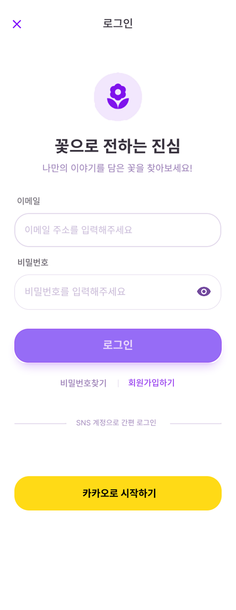
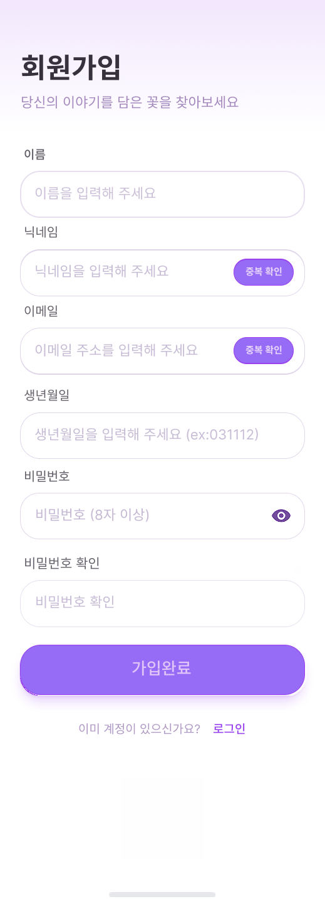

추천 중심 진입
홈 화면에서 계절 꽃, 기념일 추천, 스토리 카드가 먼저 보이기 때문에 사용자는 검색 이전에도 탐색을 시작할 수 있습니다.
Mobile Product
Florit은 AI 기반 꽃 추천과 주변 꽃집 탐색을 결합한 모바일 앱입니다. 이번 페이지는 프로젝트 2 자료 폴더에서 확인한 실제 화면을 바탕으로, 사용자가 앱 안에서 어떻게 이동하고 어떤 경험을 받도록 설계했는지를 중심으로 정리한 내용입니다.
01
화면 자료를 보면 Florit은 단순 쇼핑 앱보다는, 상황에 맞는 꽃을 찾고 저장하고 다시 꺼내보는 감성형 탐색 서비스에 더 가깝습니다.
홈 화면에서 계절 꽃, 기념일 추천, 스토리 카드가 먼저 보이기 때문에 사용자는 검색 이전에도 탐색을 시작할 수 있습니다.
검색 화면에서는 최근 검색어, 인기 키워드, 분위기별 검색, 꽃말별 검색처럼 여러 진입점을 따로 두어 사용자가 탐색 방식을 고를 수 있습니다.
보관함 화면이 따로 있는 점이 중요합니다. 꽃을 고르는 순간뿐 아니라 저장하고 다시 보는 경험까지 서비스 범위에 포함하고 있습니다.
02
화면을 순서대로 놓고 보면 Florit의 핵심 흐름은 진입, 탐색, 주변 매장 확인, 저장의 네 단계로 읽힙니다.
시작 화면, 로그인, 회원가입 화면으로 앱 진입 장벽을 낮추고 기본 사용자 흐름을 정돈했습니다.
홈에서 추천 카드를 먼저 보여주고, 검색 화면에서는 사용자가 상황과 키워드 기반으로 원하는 꽃을 좁혀갈 수 있게 했습니다.
지도 화면은 꽃집 마커와 하단 카드 정보를 함께 사용해 현재 위치에서 선택 가능한 매장을 직관적으로 보여줍니다.
보관함 화면에서 저장한 꽃을 다시 확인할 수 있어서, 탐색 경험이 일회성으로 끝나지 않도록 연결했습니다.
03
프로젝트 2 폴더에서 확인한 실제 화면을 기준으로, 사용자 경험을 설명하는 데 중요한 장면들만 골랐습니다.
Florit 화면도 기본은 접어두고, 펼치면 작게 잘린 미리보기만 보이게 바꿨습니다. 필요한 이미지는 각각 새 창으로 열어서 자세히 확인할 수 있습니다.




04
Florit 자료를 다시 정리하면서, 이 프로젝트의 강점은 화면 하나하나보다 전체 흐름의 통일감에 있다고 느꼈습니다.
홈, 검색, 지도, 보관함이 모두 같은 보라 계열 톤과 둥근 카드 UI를 공유해서 사용자가 화면이 달라도 같은 서비스 안에 있다고 느끼게 합니다.
사용자가 검색을 직접 하지 않아도 홈에서 추천을 받고, 필요하면 검색과 지도로 이어질 수 있게 흐름이 부드럽게 이어집니다.
단순 상품 탐색이 아니라 상황, 분위기, 꽃말 같은 정성적 기준을 UX로 풀어내려 했다는 점이 이 프로젝트의 매력이라고 생각합니다.